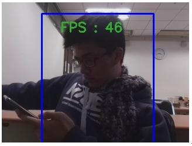
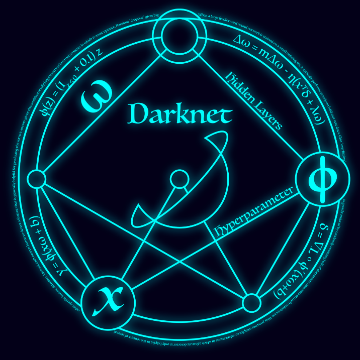
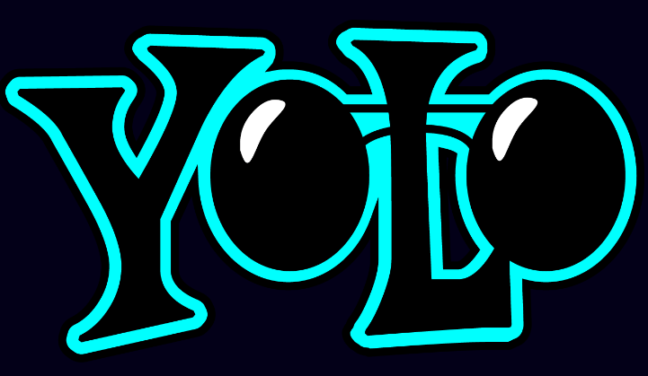
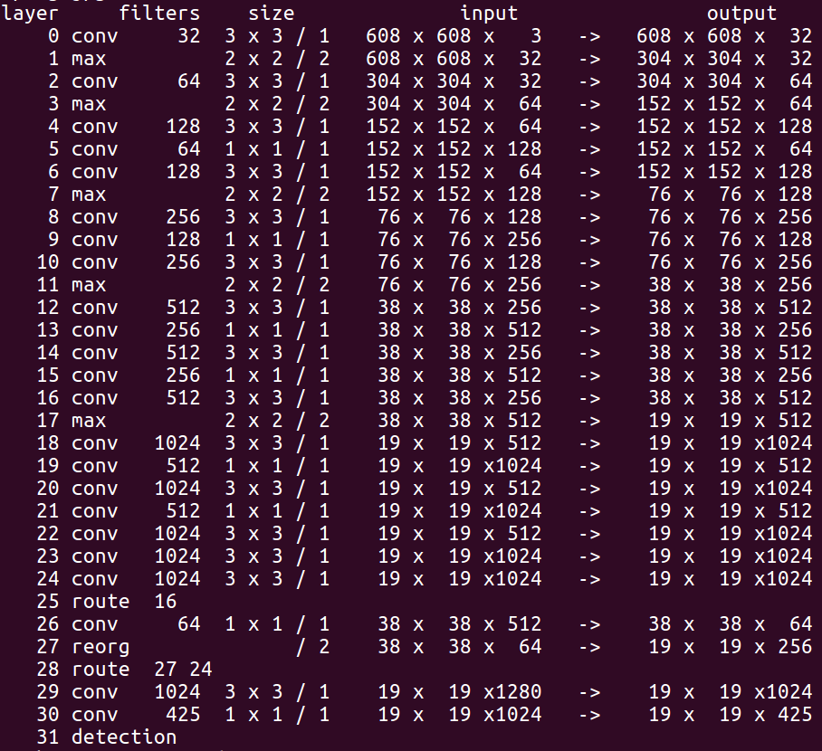
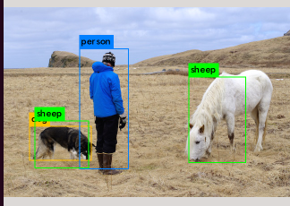
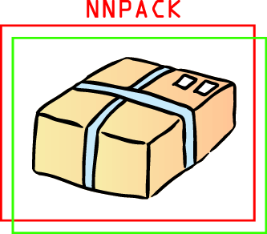
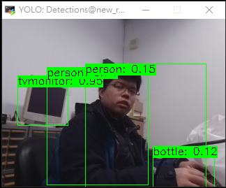
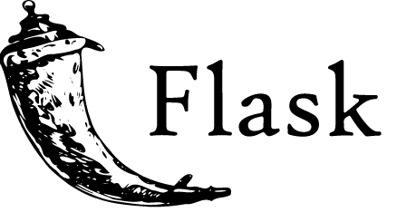
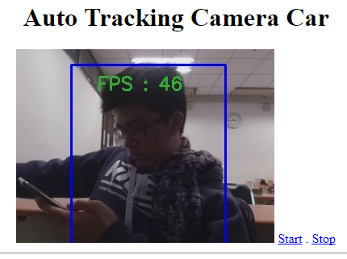

OpenCV 
OpenCV(Open Source Computer Vision) is an open source library. It's often used while you need to perform object detection, object tracking and object recognition.
Tracker
We use the tracker in OpenCV as the tracker.
There are kinds of trackers, each has its strength and weakness, you can learn more from here. The process ability of RPi is poor compare to PC, so we use MEDIANFLOW tracker because it's fast.
This tracker tracks the object in both forward and backward directions in time and measures the discrepancies between these two trajectories.
After test, we found that it will notice the tracking failure, so the car will stop while loss tracking, rather than follow some other things and cause danger.
It can get a acceptable fps on RPi like the picture below, while other trakcers may have fps around 3.

The tracker mentioned above need user to provide a ROI(region of interest) to initialize itself. Thus we want to use object detector to tell the tracker where to track.
Yes, OpenCV have a DNN module for it, but for the poor capability of RPi, it will be too slow. So we found other method.
Darknet 
Darknet is an open source neural network framework written in C and CUDA. It is fast, easy to install, and supports CPU and GPU computation. You can find more information here.
The work principle of it is below, from yolo website.

Yolo 
You only look once (YOLO) is a state-of-the-art, real-time object detection system. You can find more information here.
If you run darknet with yolo, you will see the architecture of the network you use, like below. It's a neural network, and can detect different objects on the same picture.

Yolo detects object well, but it's too large and complicated for RPi to run. There is a smaller one called Tiny Yolo. It may misdetect something like below, but detect a person is a piece of cake for it.

Tiny yolo is still not quick enough. It took 3 seconds on my PC to detect the result above.
NNPACK 
NNPACK is an acceleration package for neural network computations.
There is a Darknet with NNPACK available on github. It can accelerate the NN without a GPU, so it's suitable for embedding system like RPi. It also provide OpenCV interface so we can combine it with our tracker directly.
Use NNPACK with tiny yolo, we can detect a person from a 320*240 picture on RPi in about 2 second. It's acceptable compare to manually selecting ROI.

Flask 
We use another python program with flask to build a local website for user to monitoring the tracking condition of the car. The tracking program will store the frame it looks to the storage, and the python program will stream the picture onto the website.
